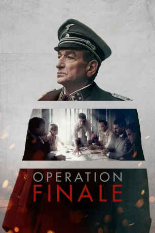

#9689 Operation Finale
 
 IMDB-Wertung: 6.5 / 10
IMDB-Wertung: 6.5 / 10  Tomatometer: 61
Tomatometer: 61  Metascore: 58
Metascore: 58 
Fünfzehn Jahre nach dem Ende des Zweiten Weltkriegs unternehmen die israelischen Geheimdienste Mossad und Schin Bet – unter Leitung des unermüdlichen Agenten Peter Malkin (Oscar Isaac) – den riskanten und streng geheimen Einsatz, den Nazi-Kriegsverbrecher Eichmann (Ben Kingsley) zu fassen, der nach dem Fall der Nazis als tot gemeldet wurde. Dieser hat sich aber stattdessen unter falschem Namen nach Argentinien abgesetzt und wohnt und arbeitet in einem Vorort von Buenos Aires mit seiner Frau und seinen beiden Söhnen. Während sie den Tagesablauf von Eichmann überwachen, schmieden Malkin und seine Leute Pläne, Eichmann im Schutz der Dunkelheit nahe seiner Wohnung zu entführen. Sie sind entschlossen, den SS-Mann aus Argentinien herauszuschmuggeln und nach Israel zu überführen, wo ihm der Prozess gemacht werden soll. Malkin und Eichmann liefern sich ein fesselndes Katz-und-Maus-Spiel.
Jahr: 2018
Dauer: 123 Minuten
FSK:
Land: USA Studio: Metro-Goldwyn-MayerTonspuren: - , - , - , - , - ,
Untertitel: Englisch, Deutsch,
Auflösung: 1080p (1920x1080) Größe: 3901 MB
Genre: Thriller, Drama, Geschichte, Biographie
Regisseur: Chris Weitz
Drehbuch: Matthew Orton
Soundtrack: Alexandre Desplat
Darsteller:
 Oscar Isaac als Peter Malkin
Oscar Isaac als Peter Malkin Ben Kingsley als Adolph Eichmann
Ben Kingsley als Adolph Eichmann Mélanie Laurent als Hanna Elian
Mélanie Laurent als Hanna Elian- Lior Raz als Isser Harel
 Nick Kroll als Rafi Eitan
Nick Kroll als Rafi Eitan- Michael Aronov als Zvi Aharoni
 Ohad Knoller als Ephraim Ilani
Ohad Knoller als Ephraim Ilani- Greg Hill als Moshe Tabor
 Torben Liebrecht als Yaakov Gat
Torben Liebrecht als Yaakov Gat- Michael Benjamin Hernandez als Dani Shalom
 Joe Alwyn als Klaus Eichmann
Joe Alwyn als Klaus Eichmann Greta Scacchi als Vera Eichmann
Greta Scacchi als Vera Eichmann Peter Strauss als Lothar Hermann
Peter Strauss als Lothar Hermann Haley Lu Richardson als Sylvia Hermann
Haley Lu Richardson als Sylvia Hermann- Pêpê Rapazote als Carlos Fuldner
 Rainer Reiners als Fritz Bauer
Rainer Reiners als Fritz Bauer Simon Russell Beale als David Ben-Gurion
Simon Russell Beale als David Ben-Gurion- Antonia Desplat als Dvora
- Juan Ignacio Pucci als Cyclist
 Allan Corduner als Gideon Hausner
Allan Corduner als Gideon Hausner- Rocío Muñoz als Graciela
- Rita Pauls als Fruma
- Ania Luzarth als Annia
- Tatiana Rodriguez als Annie Werner
- Ezequiel Campa als Herr Werner
- Aitor Miguens als Antonio
- Eduardo Green als Captain López Rega
- Patricio Witis als Guelle
- Mario Aitel als Old Man
- Jano Seitun als Aero Nuevo Manager
- Simon Goldzen als Young Boy
- Alejandro Pérez als Driver
- Tomás Mejía als ATC Man
- Nicolás Levin als Money-Changer
- Pablo Flores Maini als Captain Wedeles
- Julián Rodríguez Rona als Captain Tohar
- Eric Barattini als Security Guard
- Iván Steinhardt als Mechanic
- Ana Schmukler als Switchboard Operator
- Sabrina Macchi als Jewish Mother
- Maximiliano Trento als Obergruppenführer
- Federico Andrés Calderón als Catholic Priest
- Ceri Foster als Police Guard
- Carlos Sconza als Aircraft Marshall
- Mariano Cukar als Real Estate Agent
- Walter Urquiza als Person
- Agustín Díaz als Person
- Cecilia Cañelas als Person
- Pablo Galarza als Tacuara Biker
- Facundo Suárez als Tacuara Biker
Datei: X:\2018(N-Z)\Operation Finale (2018, FSK, 1920x1080).mkv seit 04.10.2018
Festplatte: HD 2018(G-Z)-2019(A-Z)
 Es gibt insgesamt 172 Filme in der Gruppe '2018(N-Z)'
Es gibt insgesamt 172 Filme in der Gruppe '2018(N-Z)'